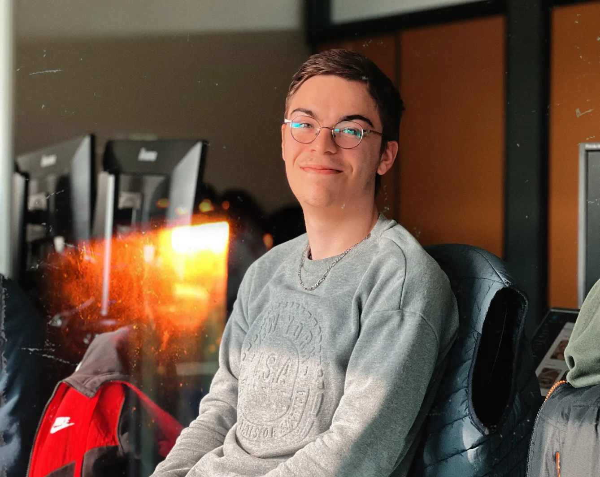

Je m’appelle Lucas CHIPPAUX, passionné par l'univers de la communication, du multimédia ou encore du design depuis mon plus jeune âge, j'ai toujours été fasciné par la manière dont les messages peuvent être transmis de manière créative et efficace.
Au cours de ma formation en BUT MMI à Montbéliard, j'ai appris à travailler avec des outils de conception graphique tels que Photoshop, Illustrator, Figma. J'ai également suivi des cours de communication et de marketing qui m'ont permis de comprendre les différentes stratégies de communication utilisées dans le monde professionnel afin de réaliser des dossiers, gérer les réseaux sociaux...
Mon adresse mail : lucas.chippaux@gmail.com
Mon numéro de téléphone : 07 66 35 77 27
Télécharger mon CV